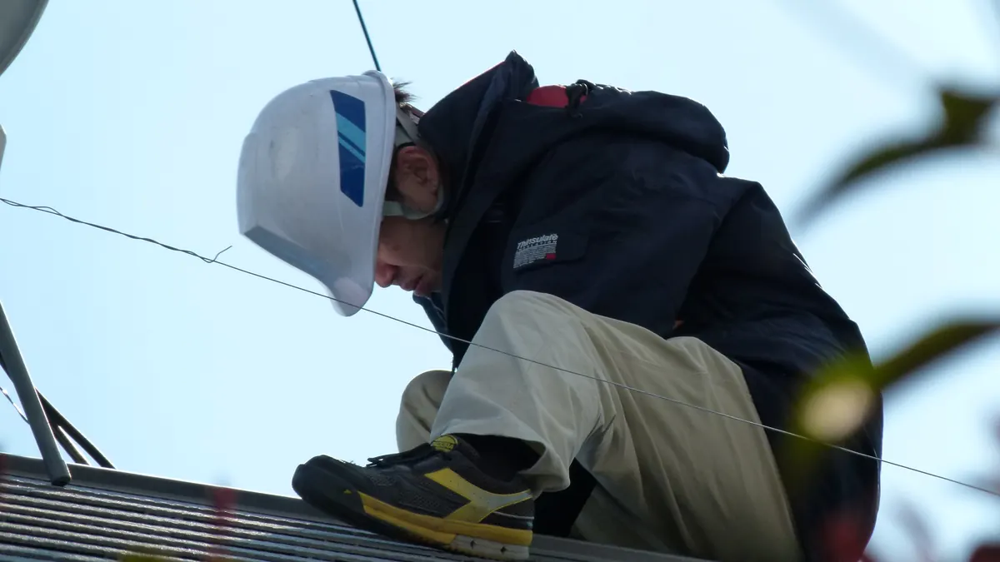

Instalar un kit solar de 12 V sin jugártela
Doce voltios suenan inofensivos y no dan calambre, pero una batería de litio de 100 Ah puede entregar cientos de amperios en un cortocircuito. Lo que quema una furgoneta no es la tensión: es la corriente por un cable demasiado fino.
Esta guía contiene enlaces de afiliado: si compras a través de ellos recibimos una comisión sin coste adicional para ti, y no cambia lo que recomendamos. Cómo nos financiamos.
Contenido informativo. Explicamos criterios técnicos generales, no un proyecto de instalación. Cualquier trabajo sobre la línea de 230 V de una vivienda o de un vehículo, y en general todo lo que quede aguas abajo de un inversor, puede requerir un instalador autorizado y su certificado. Si dudas sobre la parte de corriente alterna, no improvises: consulta a un profesional.
Orden correcto de conexión
El regulador se alimenta de la batería y necesita ver su tensión para saber si trabaja a 12 o a 24 V. Conectado primero al panel, algunos modelos detectan mal el sistema y otros se dañan, porque la tensión de circuito abierto llega sin nada que la absorba. El orden no es una recomendación, es una secuencia:
- Fija todo mecánicamente antes de conectar nada y comprueba la polaridad con un multímetro, no por el color del cable.
- Deja el fusible principal fuera de su soporte o el magnetotérmico abierto.
- Conecta batería → regulador, negativo primero. Inserta el fusible: el regulador debe encenderse y mostrar la tensión de batería.
- Conecta panel → regulador. Tapa el panel o deja un conector MC4 sin unir mientras trabajas: un panel al sol siempre está en tensión.
- Conecta el inversor directamente a la batería con su propio fusible, nunca a la salida de consumo del regulador, dimensionada para unos pocos amperios.
Para desconectar, al revés: primero el panel, después el inversor y los consumos, y la batería al final.
Sección de cable por corriente y longitud
A 12 V, el margen de caída de tensión aceptable es del 3 %: 0,36 V en todo el recorrido. Es muy poco, y por eso las secciones de un sistema de baja tensión parecen exageradas al lado de una instalación doméstica. Se calcula con la resistividad del cobre:
Caída (V) = 2 × longitud (m) × corriente (A) × 0,0175 ÷ sección (mm²)
La longitud es la del recorrido de ida; el 2 cuenta el retorno por el negativo.
| Corriente a 12 V | Sección mínima | Ejemplo típico |
|---|---|---|
| 10 A | 2,5 mm² | Luces LED, bomba de agua, ventilador |
| 20 A | 4 mm² | Panel de 220 W hacia el regulador |
| 30 A | 6 mm² | Salida de un MPPT de 30 A a la batería |
| 50 A | 10 mm² | Cargador de batería del alternador |
| 100 A | 25 mm² | Inversor de 1.000 W |
| 150 A | 35 mm² | Inversor de 1.500-2.000 W |
Valores orientativos para tiradas cortas, de hasta metro y medio por polo (unos 3 m de cable contando ida y retorno). Si el recorrido total supera esos 3 metros, sube un escalón de sección por cada duplicación de longitud y vuelve a comprobar la caída con la fórmula.
Dos matices: calcula con la corriente máxima real, no con la media, y deja margen si el cable va en un mueble cerrado o agrupado, porque disipa peor. Usa cobre estañado flexible de muchos hilos finos, no el rígido doméstico: con la vibración de un vehículo, el hilo rígido acaba rompiendo.
Fusibles: dónde y por qué
La regla que lo resume: un fusible no protege al aparato, protege al cable. Su calibre va por encima del consumo normal del circuito y por debajo de lo que el cable aguanta sin calentarse.
- Fusible principal en el positivo de la batería, a menos de 20 cm del borne. El tramo entre borne y fusible es el único de la instalación que no está protegido por nada. Un tornillo que roce ese cable contra el chasis provoca un cortocircuito directo a batería, con cientos de amperios en las de litio y miles en las de plomo: el cable se pone al rojo en segundos y el aislante arde. Para estas corrientes se usan portafusibles MEGA, ANL o clase T.
- Fusible propio en la línea del panel, entre panel y regulador, dimensionado a la corriente de cortocircuito del panel más un margen.
- Fusible propio en la línea del inversor, el consumidor de más corriente de la instalación, lo más cerca posible de la batería.
- Fusibles individuales por circuito en una caja de distribución: luces, bomba, nevera, cargadores.
Si prefieres magnetotérmicos, tienen que ser específicos para corriente continua. Uno de alterna no extingue bien el arco en continua y puede quedarse cerrado justo cuando lo necesitas.
Terminales y por qué el aluminio no vale
Los terminales de sección grande se prensan con crimpadora hidráulica o de trinquete, con la matriz de su sección, y se protegen con tubo termorretráctil. Un terminal retorcido a mano o apretado con alicates parece sujetar, pero deja microhuecos: eso es resistencia, y resistencia con 100 A de paso es calor concentrado en un punto. Tampoco sirve estañarlo con soldador: el estaño fluye en frío bajo la presión del tornillo y el hilo queda rígido justo donde más vibra.
El aluminio queda fuera por tres razones acumuladas: conduce alrededor de un 60 % de lo que conduce el cobre, se deforma en frío bajo la presión del terminal y acaba aflojando la unión, y su óxido superficial es aislante, al contrario que el del cobre. Cobre estañado, siempre.
Ventilación y fijación de la batería
Una LiFePO4 no emite hidrógeno como una de plomo abierta, pero sigue necesitando disipar calor: no la encajes sin holgura ni la tapes con aislante térmico. Si es de plomo-ácido abierta, la ventilación al exterior es obligatoria, porque el hidrógeno que desprende al cargar es explosivo.
La fijación mecánica no es opcional. Una batería de 12 kg sin sujetar es un proyectil en un frenazo o un vuelco. Va en un cajón o caja con brida metálica atornillada a un elemento estructural, no apoyada bajo un asiento ni con una correa elástica.
Protege los bornes con las tapas que trae la batería o una caja cerrada: basta una llave que caiga entre los dos polos para provocar un arco que funde el metal.
La línea de 230 V del inversor
En cuanto entra un inversor tienes dos instalaciones conviviendo en el mismo mueble. La de 230 V se tiende separada de la de 12 V, con su propia canalización y sin compartir pasos con los cables de continua, para que un roce no mezcle los dos sistemas.
Esa línea lleva su propia protección diferencial y magnetotérmica, y sus tomas deben ser inequívocamente de 230 V para que nadie enchufe ahí un aparato de 12 V. Nunca conectes la salida del inversor a la instalación fija sin un conmutador que impida que coincida con la red: si el inversor y la red se encuentran, en el mejor de los casos pierdes el inversor. Aquí es donde conviene un instalador autorizado.
Los cuatro fallos que provocan incendios
Lo que hay detrás de casi todos los casos
- Cable subdimensionado. Un inversor de 1.500 W con cable de 6 mm² funciona unos días y calienta hasta fundir el aislante.
- Ausencia de fusible en el positivo de la batería. Nada más barato ni más determinante en toda la instalación.
- Terminales flojos o mal prensados. Generan resistencia, la resistencia genera calor y el calor afloja más la unión. Aprieta al par indicado y revisa los tornillos cada año.
- Mezclar baterías de distinta química, capacidad o edad. La más cargada intenta cargar a la débil con corrientes que ningún BMS espera.
Un detector de humo y un extintor de polvo accesible cuestan poco y son lo único que sirve cuando ya ha pasado.
La alternativa sin cableado
Todo lo anterior es evitable. Una estación portátil lleva dentro las mismas celdas LiFePO4, el mismo BMS, un MPPT y un inversor, ya cableados, protegidos y certificados como un solo producto: solo enchufas el panel a la entrada solar y fijas la estación. Pagas entre un 30 % y un 40 % más por vatio-hora que en un montaje a medida, y no prensas un solo terminal.
Si dudas entre las dos filosofías, las cuentas completas están en estación portátil o instalación fija de 12 V.
Tienes los seis modelos que recomendamos en la comparativa 2026, el panel que necesita cada uno en cuántos paneles solares necesito y los criterios de calidad de celda en la guía de baterías LiFePO4. Si no sabes qué capacidad te hace falta, empieza por la calculadora.
Ver estación de 1 kWh sin cableado Ver panel plegable de 220 W
Preguntas frecuentes
¿Se conecta primero el panel o la batería al regulador?
Primero la batería y después el panel. El regulador necesita la tensión de la batería para arrancar y para detectar si el sistema es de 12 o de 24 V; alimentado solo desde el panel puede detectar mal el sistema o dañarse. Para desconectar se hace al contrario: primero el panel, luego la batería.
¿Dónde se coloca el fusible principal de la batería?
En el polo positivo, a menos de 20 cm del borne. El tramo de cable que queda entre el borne y el fusible no está protegido por nada, y un cortocircuito ahí libera cientos o miles de amperios sin que nada lo corte, con el cable al rojo en segundos.
¿Qué sección de cable necesito para 30 A a 12 V?
6 mm² para una tirada corta, de hasta metro y medio por polo. Si el recorrido total de ida y vuelta pasa de tres metros hay que subir de sección para mantener la caída de tensión por debajo del 3 %, que a 12 V son solo 0,36 V.
¿Por qué no vale cable de aluminio en una instalación de 12 V?
Porque conduce alrededor de un 60 % de lo que conduce el cobre, se deforma en frío bajo la presión del terminal y acaba aflojando la conexión, y su óxido superficial es aislante. En un sistema de baja tensión y alta corriente esas tres cosas juntas terminan en un punto caliente.
Redacción de Estacionportatil. Contenido informativo de seguridad eléctrica, no sustituye a un proyecto ni a un instalador autorizado. Puedes leer nuestra metodología. Última revisión: septiembre de 2026.